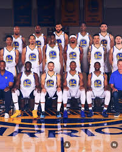
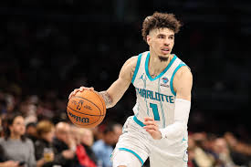
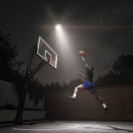

Why I Love Basketball
Basketball has always been more than just a sport to me. It’s a way to express myself, release energy, and connect with people who share the same passion. I started playing when I was a kid, and over time, it became something that shaped who I am. Every time I step on the court, I feel focused, confident, and alive. The competition, the teamwork, and the challenge of getting better every day all push me to grow as an athlete and as a person.
What I love most about basketball is how it brings people together. Whether it’s pickup games at the gym, college practices, or watching the pros on TV, the game connects us through emotion and energy. You can tell who really loves basketball by how they move, how they talk about the game, and how they never stop working to improve.
My Favorite Team: Golden State Warriors
My favorite NBA team is the Golden State Warriors. There’s something about them that grabs my attention every year. Their energy, team chemistry, and fast-paced style of play make them one of the most exciting teams to watch. I’ve followed them for years, and I really respect how they focus on teamwork and smart basketball rather than just individual talent.
It’s also cool seeing how they keep evolving as a team. Now that Stephen Curry’s brother, Seth Curry, is part of the team, it makes their story even better. Watching both Currys on the same squad brings a new level of excitement and connection. I like how they always play with heart, discipline, and creativity — all qualities I try to bring to my own game.
My Favorite Player: LaMelo Ball
Even though the Warriors are my favorite team, my favorite player is LaMelo Ball. I admire his confidence, passing ability, and flashy style. He plays with creativity and makes the game fun to watch. What inspires me most about LaMelo is how he stayed true to himself. He didn’t follow the traditional path to the NBA, but he still made it through hard work, self-belief, and family support.
LaMelo’s vision and basketball IQ make him stand out. Every time he plays, he brings something new — whether it’s a behind-the-back pass or a no-look assist. I try to bring that same creative energy to my own game. His journey reminds me that there’s more than one way to reach success, as long as you stay focused and never give up.
Photo Gallery
   <Favorite Highlights
What Basketball Means to Me
Basketball has taught me discipline, teamwork, and leadership. It’s more than just scoring points — it’s about learning how to trust your teammates, make quick decisions, and handle both success and failure. The game gives me confidence and teaches me how to keep pushing forward, no matter how tough things get.
Whether I’m playing in practice, competing in college games, or watching my favorite team, basketball reminds me to chase my goals and stay motivated. It’s not just a game — it’s a lifestyle. My dream is to continue growing as a player, one day making it to the NBA and inspiring others like my favorite players inspired me.